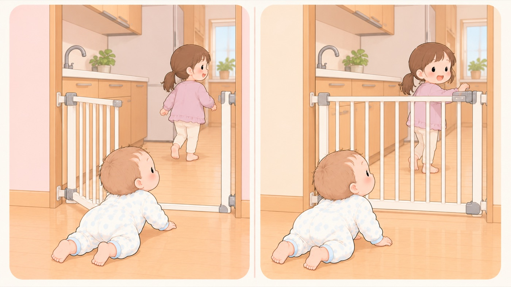

ゲートを使う
ベビーゲートは、閉め忘れると意味がない
事故はどれも「付けていなかった」か「閉め忘れた」。使えるのは24か月まで
はいはいで家の中を自由に動けるようになると、行動範囲が一気に広がります。ゲートは、その範囲を区切るための道具です。ただし報告されている事故は、付けていなかったか、閉め忘れたかのどちらかです。買って付けるところまでより、そのあと毎回閉めるほうが難しい、ということです。

左は危険な例、右は安全な例です。- すること：通ったら、その場で閉めてロックする
開けて通るゲートは、閉めるのを忘れた一回で機能しなくなります。通ったら振り返って閉める、までを一続きの動作にします。 - すること：家族全員で、同じ運用にする
上の子が開けたまま行ってしまう経路があります。消費者庁も、兄姉の閉め忘れを名指しで挙げています。祖父母や一時的に来た人にも伝えます。 - すること：浴室とキッチンは、進路をふさぐ位置に置く
消費者庁は、溺水の危険がある浴室や、やけどの危険があるキッチンには、進路を塞ぐような位置に設置することもすすめています。階段だけの道具ではありません。 - すること：設置したあとも、定期的に確かめる
突っ張り式は使っているうちにゆるみます。通るたびに押して、動かないかを見ます。 - しないこと：乗り越えられるようになってからも、ゲートに頼らない
消費者庁は対象年齢を24か月までとし、子どもが自分で乗り越えたり開けたりできるようになったら使用を控えるよう求めています。そこから先は、ドアを閉める、階段を使わせないといった別の対策に切り替えます。 - すること：後追いが始まることを前提にする
親が階段を上がると、ついて上がってきます。1歳1か月が、2階にいる保護者を追いかけて階段を上がり、9段目あたりからお尻で滑るように転落した事例があります。階段にゲートはありませんでした。
閉め忘れで起きた事故（消費者庁 Vol.557）
「階段の2階から1階まで転落し、発見したときは仰向けで泣いており、左耳から出血していた」（0歳）。
「2階の階段から1番下まで転落し、左後頭部打撲による腫れがあった。 ベビーゲートを閉め忘れていた。」（0歳）
消費者庁は「使用時以外は常にロックをかける習慣を付けることが大切」とし、 「兄姉のいる御家庭では、上の子の扉の閉め忘れにも注意」と書き添えています。
🛍 グッズの選び方
PR- 開け閉めのしやすさで選びます。毎日何度も通る場所なので、固いと必ず使わなくなります。
- 設置幅を測ってから選びます。拡張フレームが別途必要な製品が多くあります。
- 階段の上に置くなら、ねじ止めか固定用カップ付きのものを選びます。くわしくは「階段からの転落」に書きました。
- 日本育児 ベビーズゲート（つっぱり式）つっぱり式。穴を開けずに置けるAmazonで見る →
- 日本育児 スムーズマルチゲイト（6か月頃〜満2歳・階段上はネジ固定）階段上はネジ固定。6か月頃〜満2歳Amazonで見る →
- ＆COCO ドア 指はさみ防止カバードアの縁に挟む。開閉で指を挟まないAmazonで見る →
- 日本育児 スマートゲイトIIプラス（階段上対応可・扉付き・突っ張り）階段上に対応。扉を開けて通れるAmazonで見る →
- カトージ ベビーセーフティオートゲート スリムM（68-78cm）自動で閉まる。閉め忘れが減るAmazonで見る →
リンクはAmazonアソシエイトリンクです。当サイトはアフィリエイトプログラムに参加しています。Amazonのアソシエイトとして、当サイトは適格販売により収入を得ています。 選び方の方針
この項目の根拠
- 子ども安全メール Vol.557 ベビーゲートを正しく使用し事故を防止しましょう！（消費者庁）（新しいタブで開きます）
子どもがハイハイ等で家庭内を自由に動き回れるようになると行動範囲が一気に広がり、階段からの転落事故もこの時期に起こりやすくなること。階段の2階から1階まで転落し発見したときは仰向けで泣いており左耳から出血していた事例（0歳）、2階の階段から1番下まで転落し左後頭部打撲による腫れがあり、ベビーゲートを閉め忘れていた事例（0歳）。使用時以外は常にロックをかける習慣を付けることが大切であること。兄姉のいる家庭では上の子の扉の閉め忘れにも注意すること。購入の際は設置場所に適した製品か確認し、階段上への設置が禁止されている場合もあること。設置後は異常がないか定期的に確認すること。子どもが自分で乗り越えたり開けたりできるようになったら使用を控えること（対象年齢は24か月まで）。溺水の危険がある浴室や、やけどの危険があるキッチンは、進路を塞ぐような位置に設置することもおすすめであること。 - みんなの消費安全ナビ Vol.691 転落事故は「環境づくり」で予防！（消費者庁）（新しいタブで開きます）
階段からの転落について、ベビーゲートを正しく取り付け、常に閉めてロックをかけること。設置したベビーゲートは定期的に確認すること。自宅2階にいる保護者を追いかけてこどもが階段を上がってきて、9段目あたりからお尻で滑るように転落した事例（1歳1か月）、階段にベビーゲートなし。